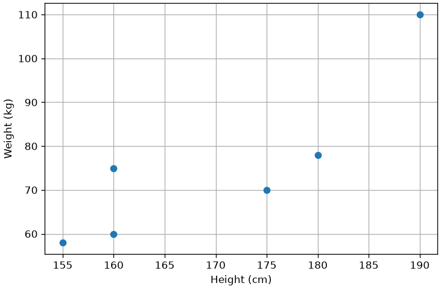
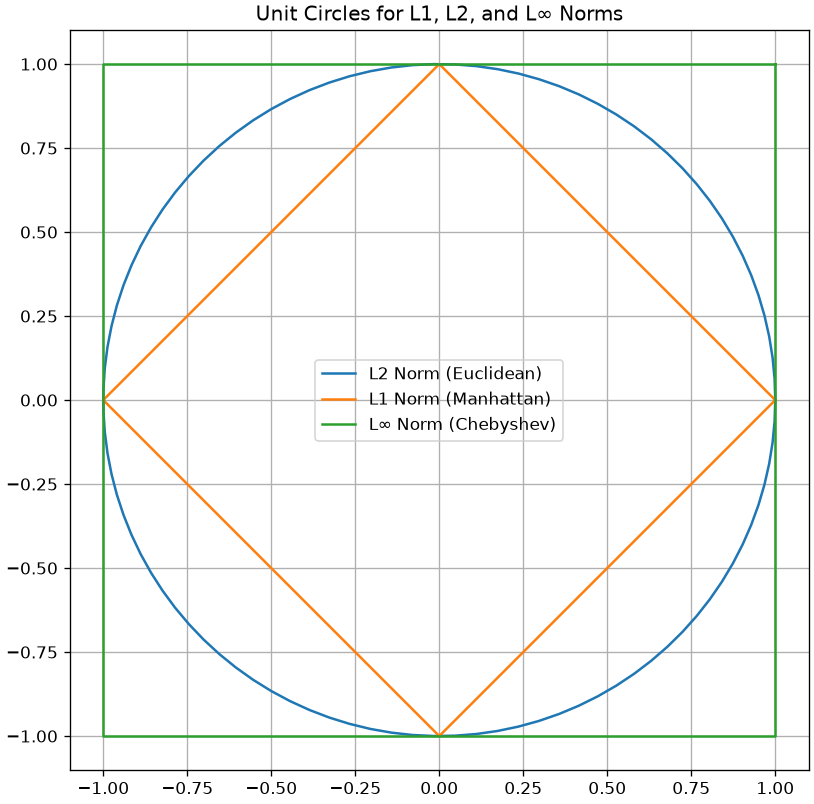
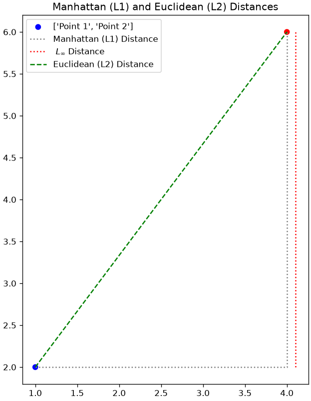
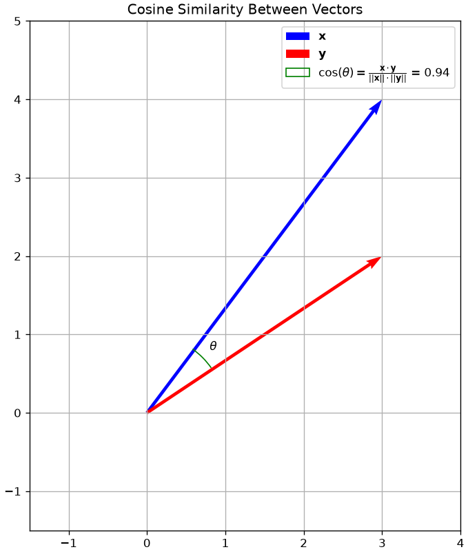
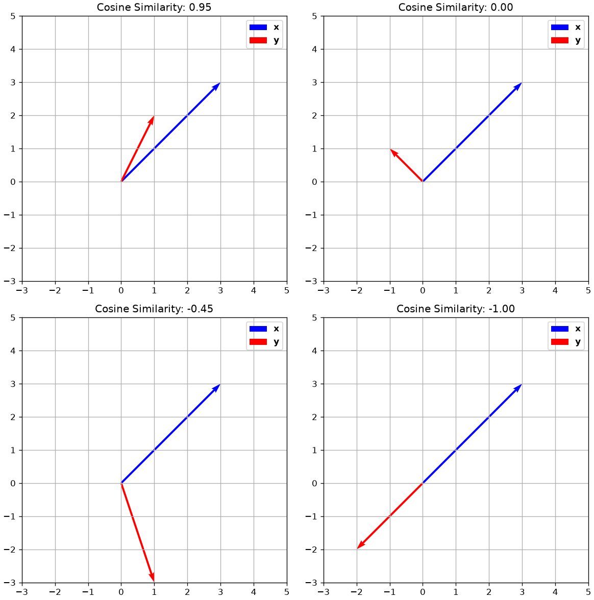
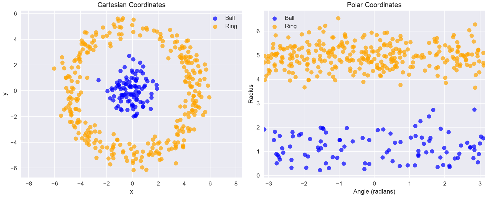
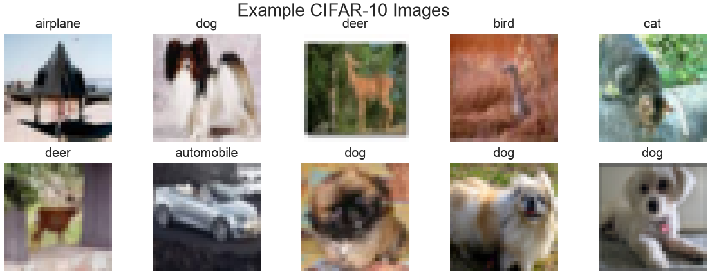
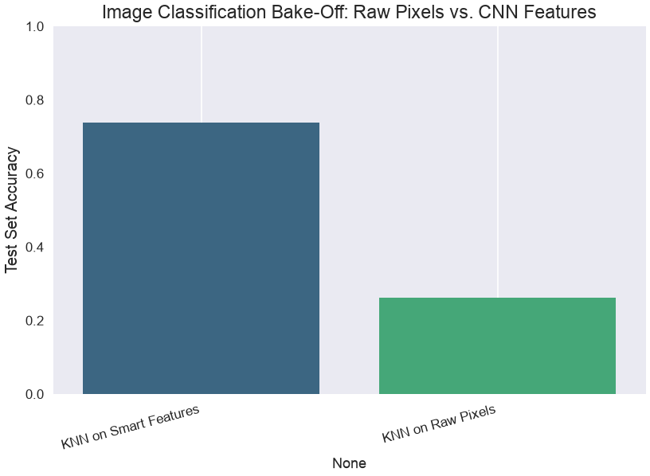
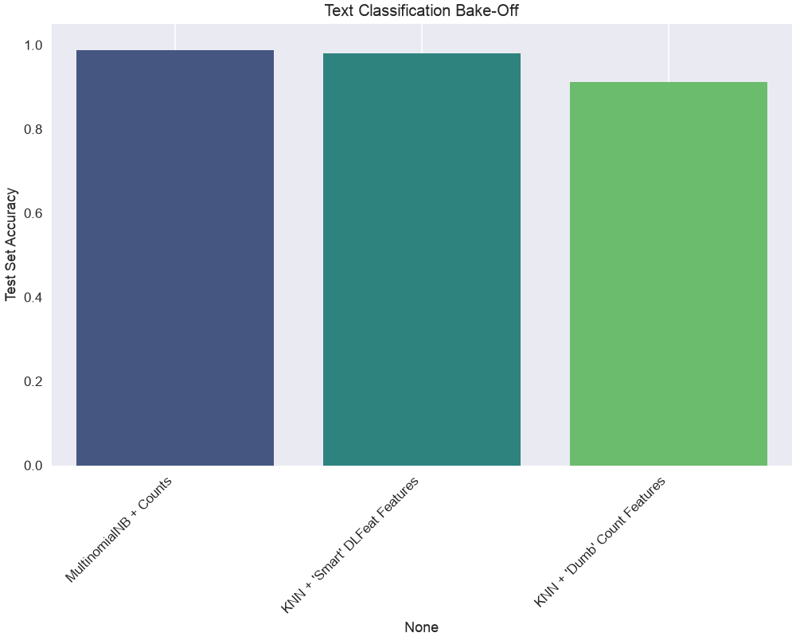
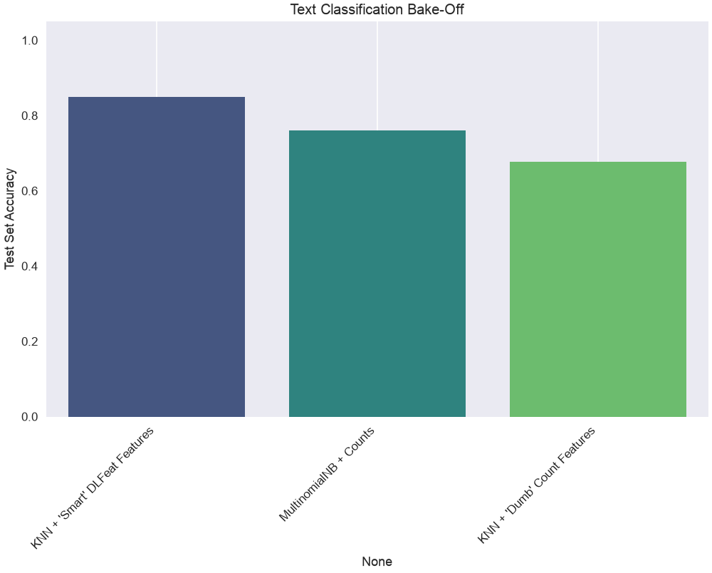

Data representation
So far, we have seen data as a collection of observations of multiple variables. We often represented a dataset as a table or a data matrix. In all previous analyses, we have focused on the interpretation of the values of each variable.
However, in many cases (and especially when we have many variables), it is useful to given a geometric interpretation of data and see observations more generically as d-dimensional data points, not paying too much attention to variable names.
Consider the following data:
| Subject | Height (cm) | Weight (Kg) |
|---|---|---|
| 1 | 175 | 70 |
| 2 | 160 | 60 |
| 3 | 180 | 78 |
| 4 | 160 | 75 |
| 5 | 155 | 58 |
| 6 | 190 | 110 |
We can see each of these observations (the rows of the matrix) as a data point. Further, we can geometrically represent such points as follows:
In this context in which we are not always explicitly giving names or interpretation to the variables, each of the variables will also be referred to as a feature of the data. For instance, a dataset of images of 100 \times 100 pixels can be seen as a collection of 10000-dimensional vectors, where each vector’s dimension is a “feature”, i.e., the value of a specific pixel of the image.
Given this interpretation of variables as features, it is often common to talk about feature extraction, in the case of any process transforming the data \mathbf{x} \in \Re^d to another form \mathbf{y} \in \Re^m. In this context, a function:
f : \Re^d \to \Re^m
will be often referred to as a “feature extraction function” (of feature extractor) or a “representation function”. We will recall these terms going further in the course. We will also refer to the process of mapping data using a representation function as data representation.
We will also refer to \Re^d and \Re^m as “feature spaces” or “representation spaces” as they will be vector spaces to which data points (also called feature vectors) belong.
Important Properties of Feature Spaces
Since observations \mathbf{x} are vectors living in some vector spaces, all basic properties of vectors and vector spaces seen in linear algebra will apply here as well. We’ll recall the most important concepts as we need them in the course, but, for the moment, it is useful to summarize the main important properties.
Norms
Given a vector space S, a norm p is a function from S to a non negative real number:
p : S \to \Re^+_0
A commonly used family of norms is the one of the L-p norms:
||\mathbf{x}||_p = \left( \sum_{i=1}^{d} |x_i|^p \right)^{1/p}
Where \mathbf{x} is d-dimensional, x_i is the i-th component of \mathbf{x}, and p is a parameter defining the behavior of the norm.
Note that a norm computes some kind of measure of distance of the vector from the origin of the space. In practice, the following norms are commonly used:
L-2 Norm
||\mathbf{x}||_2 = \sqrt{\sum_{i=1}^{d} x_i^2}
This is what we know as “computing the magnitude (or modulus) of the vector”. It is the Euclidean distance between the origin and the vector.
When we use the L2 norm, we can omit the p=2 subscript:
||\mathbf{x}||_2 = ||\mathbf{x}||
Another commonly used notation is the one for the squared L2 norm:
||\mathbf{x}||_2^2 = ||\mathbf{x}||^2 = \sum_{i=1}^{d} x_i^2
L-1 Norm
||\mathbf{x}||_1 = \sum_{i=1}^{d} |x_i|
This is the sum of the absolute values of the components of the vector.
L-\infty Norm
||\mathbf{x}||_\infty = \max\{|x_i|\}_{i=1}^{d}
This is the maximum absolute value of the components of the vector.
To visualize the difference between the different norms, it often common to display the unit circles according to the different norms. Each of the shapes is made of vectors with unit norm according to specific norm:

Metrics
Given a space S, a function
m : S \times S \to \Re
is a metric if the following properties are satisfied:
- The distance of a point from itself is zero: m(\mathbf{x}, \mathbf{x}) = 0;
- The distance between two distinct points is always positive (positivity) if \mathbf{x} \neq \mathbf{y}: m(\mathbf{x},\mathbf{y}) > 0, \forall \mathbf{x}, \mathbf{y} \in S, \mathbf{x} \neq \mathbf{y};
- The distance between x and y is the same as the distance between y and x (symmetry): m(\mathbf{x}, \mathbf{y}) = m(\mathbf{y}, \mathbf{x}).
- Triangle inequality: m(\mathbf{x},\mathbf{y}) \leq m(\mathbf{x},\mathbf{z}) + m(\mathbf{z},\mathbf{y}), \forall \mathbf{x}, \mathbf{y}, \mathbf{z} \in S
L-p Metrics
From the L-p norms, we can derive a family of metrics as follows:
L_p(\mathbf{x},\mathbf{y}) = ||\mathbf{x} - \mathbf{y}||_p = \left( \sum_{i=1}^{d} |x_i - y_i|^p \right)^{1/p}
L2 Distance
Note that with p=2 we have the Euclidean (or L-2) distance:
L_2(\mathbf{x},\mathbf{y}) = ||\mathbf{x} - \mathbf{y}||_2 = \sqrt{\sum_{i=1}^{d} (x_i - y_i)^2}
L1 Distance
With p=1, we obtain the L1 distance, which is also known as the Manhattan distance:
L_1(\mathbf{x},\mathbf{y}) = ||\mathbf{x} - \mathbf{y}||_1 = \sum_{i=1}^{d} |x_i - y_i|
L-\infty Distance
With p=\inf, we obtain the L-\infty distance:
L_\infty(\mathbf{x},\mathbf{y}) = ||\mathbf{x} - \mathbf{y}||_\infty = \max_{i=1}^d\{|x_i - y_i|\}
The difference between the L1 and L2 distances is notable, as shown in the figure blow:

Manhattan (L1) Distance: 7.00
Euclidean (L2) Distance: 5.00
L-Inf Distance: 4.00While the Euclidean distance measures the length of the straight segment connecting the two points, the Manhattan distance is the one in grey (dashed), which measures the distance that a taxi driver should drive in Manhattan (or any other square-block based city) to reach the destination.
Cosine Distance
The cosine distance is useful when we need to compare two vectors but we do not care about differences arising from scaling factors. Note that the Euclidean distance of two proportional vectors is in general non-zero:
||\mathbf{x} - \alpha \mathbf{x}||^2 > 0, \alpha \neq 1
Nevertheless, \mathbf{x} and \alpha \mathbf{x} are very similar. If we want to compare two vectors considering only the relationships between their coordinates, rather than their values, we can use the cosine similarity, which is defined as follows:
S_C (\mathbf{x}, \mathbf{y}) = \frac{\mathbf{x} \cdot \mathbf{y}}{||\mathbf{x}|| ||\mathbf{y}||}
The cosine similarity computes the cosine of the angle \theta comprised between two vectors, as shown in the plot below:

Note that the cosine similarity would be the same if the two vectors had different scales (i.e., if they were longer but they would have the same orientation).
This kind of similarity measure is useful when the scale of the vector is not important. For instance, if the vectors \mathbf{x} and \mathbf{y} are vectors of word counts of two documents of different lengths, we care about the proportions of words in each document, while longer document will have vectors with larger L2 norms.
The cosine similarity is a normalized number between -1 and 1, where:
- +1 means maximum alignment (similarity) between the two vectors;
- -1 means that the two vectors are dissimilar - they are indeed opposite.
- 0 means that the two vectors are orthogonal.
The plot below shows different examples of cosine similarity of vector pairs:

The cosine distance is defined from the cosine similarity as:
D_C = 1- S_C = 1- \frac{\mathbf{x} \cdot \mathbf{y}}{||\mathbf{x}|| \cdot ||\mathbf{x}||}
It should be noted that the cosine similarity is not a metric as it does not satisfy the triangular inequality.
Features and Representation Functions
Data representation can help making data analysis processes simpler. Consider for example the example below:

The data on the left in not linearly separable. However, taking polar coordinates in this form (in practice the case-defined atan2 function is used instead of arctan to handle quadrants correctly):
r = \sqrt{x^2 + y^2} \theta = \arctan\left(\frac{y}{x}\right)
We obtain a linearly separable set of data which could be classified with a linear classifier.
From Hand-Crafted Features to Learned Representations
The polar coordinate example is powerful. It shows that a problem that is impossible for a linear model in one space (Cartesian) can become trivial in another space (Polar).
In this case, we used our human intuition to “hand-craft” a new feature representation (r, \theta) that solved the problem. This is the traditional approach to machine learning.
The “Black Box” Feature Extractor
In practice, for complex data like images, audio, or text, we can’t manually discover the perfect feature function.
- What is the “radius” of a picture of a cat?
- What is the “angle” of a legal document?
This is where modern machine learning, particularly Deep Learning, comes in. The dominant approach today is to learn the representation function f from the data itself.
We can treat these massive, pre-trained models as powerful “black-box” feature extractors.
For Text: We can use models like BERT, GPT, or Sentence Transformers. You can feed a raw sentence into one of these models and get a 768-dimensional vector as output. This vector is a rich, numerical “feature vector” that understands the semantic meaning of the sentence. Libraries like Hugging Face
transformersare the standard toolkit for this.For Images: We can use pre-trained Convolutional Neural Networks (CNNs) like ResNet or Vision Transformers (ViT). You feed in a raw image and get a 2048-dimensional vector that represents its visual content.
For Audio: We can use traditional features like MFCCs (Mel-Frequency Cepstral Coefficients) or use deep models like 1D CNNs or Audio Transformers like Wav2Vec2. You feed in a raw waveform and get a feature vector that represents the acoustic content, speaker identity, or spoken words.
In all cases, the principle is the same. Whether hand-crafted (like r and \theta) or learned (like a Transformer), the goal of the representation function f: \Re^d \to \Re^m is to map the “messy” raw data into a new feature space where the relationships are simpler and a classifier can easily find the decision boundary.
Data Processing Inequality
The Data Processing Inequality (DPI) states that applying any data transformation, whether deterministic or stochastic, can never increase the information content about an original random variable. In simple terms: processing data can only lose or preserve information, never create it.
Mathematically, if we have a Markov chain X \rightarrow Y \rightarrow Z, meaning Z is conditionally independent of X given Y, then the mutual information satisfies:
I(X; Y) \geq I(X; Z)
Here, I(X; Y) represents the shared information between random variables X and Y. This inequality implies that as data X is successively transformed into Y and then Z, the amount of information about the original variable X can only decrease or stay the same; it can never increase.
This principle has profound implications for feature engineering:
Irreversible Loss If hand-crafted features inadvertently discard crucial information about the underlying signal, that information is permanently lost and cannot be recovered by subsequent modeling steps.
Information Bottleneck Poor feature design creates an information bottleneck, limiting the maximum performance achievable by any machine learning model built upon those features.
The Advantage of Learned Features Deep learning models aim to learn representations that preserve maximal task-relevant information directly from raw data, minimizing the risk of premature information loss.
Lab: The Critical Importance of Feature Representation
So far, we have learned about algorithms (like KNN) and the “Curse of Dimensionality.” We’ve also discussed how we can represent data, from raw vectors (pixels) to hand-crafted features (polar coordinates) to “learned” features (like from your DLFeat library).
In this lab, we will prove that feature representation is often more important than the choice of algorithm.
We will conduct two “bake-offs” to show how a simple KNeighborsClassifier (which we know is sensitive to dimensionality and distance) performs in different feature spaces.
- Image Task (CIFAR): We’ll compare KNN on raw pixels vs. KNN on “smart” CNN features.
- Text Task (Spam): We’ll compare the “classic”
MultinomialNBvs. KNN on word counts vs. KNN on “smart” deep features.
We will use the sklearn library for KNN and other utilities, and DLFeat for deep learning-based text features.
Let’s start by installing libraries:
!pip install torch torchvision torchaudio scikit-learn Pillow numpy scipy av
!pip install transformers sentence-transformers timm requests
!pip install --upgrade torch torchvision torchaudio transformers sentence-transformers timm requests
!pip install git+https://github.com/antoninofurnari/dlfeat.gitLet’s import dependencies:
# --- 1. All Imports ---
import pandas as pd
import numpy as np
import matplotlib.pyplot as plt
import seaborn as sns
import time
import os
import joblib # Using joblib for efficient saving of numpy arrays
# --- Sklearn Tools ---
from sklearn.model_selection import train_test_split
from sklearn.pipeline import Pipeline
from sklearn.preprocessing import StandardScaler
from sklearn.metrics import classification_report, accuracy_score
# --- Models ---
from sklearn.neighbors import KNeighborsClassifier
# --- Data and Feature Extractors ---
from torchvision.datasets import CIFAR10
from PIL import Image
from dlfeat import DLFeatExtractorPart 1: The Image Challenge (Handwritten Digits)
We will build two KNN models to classify images from the CIFAR-10 dataset.
- Model 1 (The “Dumb” Baseline): We will train KNN on raw pixel data. This is a “dumb,” high-dimensional space (32x32x3 = 3,072 features). We expect this to perform poorly.
- Model 2 (The “Smart” Model): We will first use a powerful, pre-trained Convolutional Neural Network (CNN) from your
DLFeatlibrary to extract “smart” semantic features. We will then train KNN on this new, “clean” feature space.
We hypothesize that the simple KNN model will perform dramatically better when using the “smart” features.
Step 1: Load and Visualize the CIFAR-10 Data
First, let’s load the data. CIFAR-10 consists of 60,000 32x32 color images in 10 classes. For speed, we’ll use a subset of 5,000 for training and 1,000 for testing.
We will prepare our data in two formats:
X_train_pil: A list of PIL Image objects, required byDLFeatExtractor.X_train_raw: A NumPy array of flattened pixel vectors (shape(N, 3072)), for our baseline KNN.
# --- 1. Load CIFAR-10 Dataset ---
print("1. Loading CIFAR-10 dataset...")
try:
cifar10_train_raw = CIFAR10(root='./cifar_data', train=True, download=True)
cifar10_test_raw = CIFAR10(root='./cifar_data', train=False, download=True)
class_names = cifar10_train_raw.classes
print(f" Classes: {class_names}")
# Extract a subset for faster demonstration
num_train_samples = 5000
num_test_samples = 1000
# Get PIL Images (for DLFeat)
X_train_pil = [cifar10_train_raw[i][0] for i in range(num_train_samples)]
y_train = [cifar10_train_raw[i][1] for i in range(num_train_samples)]
X_test_pil = [cifar10_test_raw[i][0] for i in range(num_test_samples)]
y_test = [cifar10_test_raw[i][1] for i in range(num_test_samples)]
# Get Raw Pixel vectors (for Baseline KNN)
# Shape = (N, 32*32*3) = (N, 3072)
X_train_raw = np.array([np.array(img).flatten() for img in X_train_pil])
X_test_raw = np.array([np.array(img).flatten() for img in X_test_pil])
print(f" Subset loaded: {len(X_train_pil)} training samples, {len(X_test_pil)} testing samples.")
print(f" Raw pixel data shape: {X_train_raw.shape}")
except Exception as e:
print(f"Error loading or processing CIFAR-10: {e}")1. Loading CIFAR-10 dataset... Classes: ['airplane', 'automobile', 'bird', 'cat', 'deer', 'dog', 'frog', 'horse', 'ship', 'truck']
Subset loaded: 5000 training samples, 1000 testing samples.
Raw pixel data shape: (5000, 3072)Step 2: Look at the Task
Let’s see what these images actually look like. They are small (32x32) and can be hard to recognize.
# Show 10 random sample images
plt.figure(figsize=(12, 4))
for i in range(10):
ax = plt.subplot(2, 5, i + 1)
idx = np.random.randint(0, len(X_train_pil))
plt.imshow(X_train_pil[idx])
plt.title(class_names[y_train[idx]])
plt.axis('off')
plt.suptitle('Example CIFAR-10 Images', fontsize=16)
plt.show()
Step 3: Baseline (KNN on Raw Pixels)
First, we’ll train our baseline model. We create a Pipeline that scales the 3,072 pixel values (a critical step) and then runs our KNN classifier. We expect this to perform poorly due to the Curse of Dimensionality—the 3,072-dimensional space is too large and “empty” for “nearest neighbor” to be a meaningful concept.
# 1. Create a simple KNN pipeline for raw pixels
# We must scale the pixel data!
pipe_knn_raw = Pipeline([
('scaler', StandardScaler()),
('model', KNeighborsClassifier(n_neighbors=5))
])
# 2. Fit and score
print("Fitting KNN on RAW 3072-pixel features...")
start_time = time.time()
pipe_knn_raw.fit(X_train_raw, y_train)
y_pred_raw = pipe_knn_raw.predict(X_test_raw)
acc_raw = accuracy_score(y_test, y_pred_raw)
time_raw = time.time() - start_time
print(f" Accuracy (KNN on Raw Pixels): {acc_raw*100:.2f}%")
print(f" Time taken: {time_raw:.2f} seconds")
# Store results for our final chart
results = {
'KNN on Raw Pixels': acc_raw
}Fitting KNN on RAW 3072-pixel features...
Accuracy (KNN on Raw Pixels): 26.20%
Time taken: 0.79 secondsStep 4: Extract “Smart” Features with DLFeat (The Expensive Step)
Now, we’ll use a pre-trained ResNet18 model via your DLFeatExtractor to convert our images into “smart” feature vectors. This model has already learned about edges, shapes, and objects from the ImageNet dataset.
This step is computationally expensive and only needs to be done once. We will run it and then save the resulting feature vectors to disk (.pkl files) to save time in the future.
# Define file paths for our cached features
FEATURE_FILE_TRAIN = 'cifar_train_resnet18.pkl'
FEATURE_FILE_TEST = 'cifar_test_resnet18.pkl'
MODEL_NAME = "resnet18"
# Check if features are already saved
if os.path.exists(FEATURE_FILE_TRAIN) and os.path.exists(FEATURE_FILE_TEST):
print("Loading 'smart' features from disk... (This is fast!)")
X_train_deep = joblib.load(FEATURE_FILE_TRAIN)
X_test_deep = joblib.load(FEATURE_FILE_TEST)
print(" Features loaded.")
else:
# If not on disk, we must extract them
print(f"No cached features found. Initializing DLFeatExtractor with model: {MODEL_NAME}...")
try:
feature_extractor = DLFeatExtractor(model_name=MODEL_NAME, task_type="image")
print(f" Feature dimension will be: {feature_extractor.get_feature_dimension()}")
# 1. Extract Training Features
print(" Extracting training features (this is the slow part)...")
start_time_extract = time.time()
# We pass the list of PIL Images: X_train_pil
X_train_deep = feature_extractor.fit(X_train_pil)
X_train_deep = feature_extractor.transform(X_train_pil)
# 2. Extract Test Features
print(" Extracting test features...")
X_test_deep = feature_extractor.transform(X_test_pil)
time_extract = time.time() - start_time_extract
print(f" Feature extraction complete. Time: {time_extract:.2f}s")
# 3. Save features to disk for next time
print(" Saving features to disk...")
joblib.dump(X_train_deep, FEATURE_FILE_TRAIN)
joblib.dump(X_test_deep, FEATURE_FILE_TEST)
except Exception as e:
print(f" Error initializing or using DLFeatExtractor: {e}")
# In case of error, create dummy variables so the lab can continue
X_train_deep, X_test_deep = None, None
print(f"\n'Smart' feature shape: {X_train_deep.shape}")Loading 'smart' features from disk... (This is fast!)
Features loaded.
'Smart' feature shape: (5000, 512)Step 5: KNN on “Smart” Features
Now we have our new “smart” feature set, X_train_deep. Instead of 3072 “noisy” pixel features, we have 512 “smart” semantic features.
Let’s train our same KNN pipeline on this new, better data.
# 1. Create a *new* pipeline for these *new* features
pipe_knn_deep = Pipeline([
('scaler', StandardScaler()), # Still good practice to scale the CNN features
('model', KNeighborsClassifier(n_neighbors=5))
])
# 2. Fit and score
print("Fitting KNN on 'smart' CNN features...")
start_time = time.time()
pipe_knn_deep.fit(X_train_deep, y_train)
y_pred_deep = pipe_knn_deep.predict(X_test_deep)
acc_deep = accuracy_score(y_test, y_pred_deep)
time_deep = time.time() - start_time
print(f" Accuracy (KNN on CNN Features): {acc_deep*100:.2f}%")
print(f" Time taken (training only): {time_deep:.2f} seconds")
# Store the result
results['KNN on Smart Features'] = acc_deepFitting KNN on 'smart' CNN features...
Accuracy (KNN on CNN Features): 73.90%
Time taken (training only): 0.06 secondsStep 6: The Final Showdown (Bar Chart)
Let’s compare the final accuracy of our two models.
# Convert results to a pandas DataFrame
results_df = pd.DataFrame.from_dict(results, orient='index', columns=['Test Accuracy'])
results_df = results_df.sort_values(by='Test Accuracy', ascending=False)
print("\n--- FINAL BAKE-OFF RANKING ---")
print(results_df)
# Plot the comparison
plt.figure(figsize=(8, 5))
sns.barplot(
x=results_df.index,
y=results_df['Test Accuracy'],
hue=results_df.index,
palette='viridis',
legend=False
)
plt.title('Image Classification Bake-Off: Raw Pixels vs. CNN Features', fontsize=14)
plt.ylabel('Test Set Accuracy', fontsize=12)
plt.xticks(rotation=15, ha='right')
plt.ylim(0, 1.0) # Show full 0-100% scale
plt.grid()
plt.show()
--- FINAL BAKE-OFF RANKING ---
Test Accuracy
KNN on Smart Features 0.739
KNN on Raw Pixels 0.262
Analysis
The results are dramatic and clear.
- KNN on Raw Pixels performed poorly (e.g., ~26% accuracy). This is a perfect demonstration of the Curse of Dimensionality. The model was trying to calculate distances in a “noisy” 3072-dimensional space, and the “nearest neighbor” was meaningless.
- KNN on “Smart” CNN Features performed dramatically better (e.g., ~74% accuracy).
Why? The pre-trained ResNet model acted as an intelligent “feature extractor.” It transformed the “dumb” 3072-pixel space into a “smart” 512-dimensional semantic space, where similar-looking images (like “dog” and “cat”) are placed closer together than “dog” and “airplane.”
In this new, lower-dimensional, and more meaningful feature space, our simple KNN model was able to find “truly” similar images and make accurate predictions. This proves our main lesson: The quality of your feature representation is the most important part of your model.
Multinomial Naive Bayes vs. KNN vs. “Smart” KNN
We have seen Multinomial Naive Bayes (MNB) as the classic, fast, and effective model for text. We also saw K-Nearest Neighbors (KNN) and learned about its main weakness: the Curse of Dimensionality.
In this lab, we will run a “bake-off” to prove these concepts. We will build three different models for our spam classification task:
- Model 1 (The Baseline):
MultinomialNBonCountfeatures.- This is the “classic” generative model that is built for this type of data.
- Model 2 (The “Wrong Tool”):
KNNonCountfeatures.- This is a distance-based model. We expect it to fail miserably because it will be trying to calculate distances in a “dumb,” unscaled, high-dimensional (e.g., 7000+ features) space.
- Model 3 (The “Smart” Model):
KNNonDLFeatfeatures.- We will first use a
sentence-bertmodel from yourDLFeatlibrary to create a “smart,” low-dimensional (e.g., 384) feature space that understands meaning. - We hypothesize that KNN will perform brilliantly in this new space.
- We will first use a
Our goal is to compare their final accuracy on the test set.
import pandas as pd
import numpy as np
import matplotlib.pyplot as plt
import seaborn as sns
import time
import io
import zipfile
import urllib.request
# --- Sklearn Tools ---
from sklearn.model_selection import train_test_split
from sklearn.pipeline import Pipeline
from sklearn.preprocessing import StandardScaler
from sklearn.metrics import classification_report, accuracy_score
# --- Models ---
from sklearn.neighbors import KNeighborsClassifier
from sklearn.naive_bayes import MultinomialNB
# --- Feature Extractors ---
from sklearn.feature_extraction.text import CountVectorizer
from dlfeat import DLFeatExtractorStep 1: Load and Split the Data
First, we load the spam dataset, map the labels, and create our single, “locked-away” test set.
# 1. Load the dataset
try:
zip_data = data_bytes("sms_spam_collection.zip")
with zipfile.ZipFile(io.BytesIO(zip_data)) as z:
with z.open('SMSSpamCollection') as f:
df = pd.read_csv(f, sep='\t', header=None, names=['label', 'message'], encoding='latin-1')
# 2. Map labels to 0 (ham) and 1 (spam)
df['label'] = df['label'].map({'ham': 0, 'spam': 1})
# 3. Define X and y
X = df['message'] # The raw text
y = df['label'] # The 0 or 1
# 4. Create the Train/Test Split
X_train, X_test, y_train, y_test = train_test_split(X, y, test_size=0.3, random_state=42, stratify=y)
print("Spam data loaded and split.")
print(f"Training samples: {len(X_train)}, Test samples: {len(X_test)}")
except Exception as e:
print(f"Error loading or processing data: {e}")Spam data loaded and split.
Training samples: 3900, Test samples: 1672Part 1: The “Bag of Words” Competitors
First, we will build pipelines using CountVectorizer. This converts our text into a large, sparse matrix of raw word counts (e.g., (3900, 7000) shape).
# --- 1. Model 1: MultinomialNB (The Baseline) ---
# This model is designed for raw counts
pipe_mnb = Pipeline([
('vectorizer', CountVectorizer(stop_words='english')),
('model', MultinomialNB())
])
print("Fitting MultinomialNB...")
start_time_mnb = time.time()
pipe_mnb.fit(X_train, y_train)
y_pred_mnb = pipe_mnb.predict(X_test)
acc_mnb = accuracy_score(y_test, y_pred_mnb)
time_mnb = time.time() - start_time_mnb
print(f"Accuracy (MNB on Counts): {acc_mnb*100:.2f}% (Time: {time_mnb:.2f}s)")
# --- 2. Model 2: KNN on Counts (The "Wrong Tool") ---
# KNN is not designed for this. It will suffer from:
# 1. Curse of Dimensionality (thousands of features)
# 2. Unscaled Data (word counts like 'the'=50 vs 'win'=1)
pipe_knn_counts = Pipeline([
('vectorizer', CountVectorizer(stop_words='english')),
('model', KNeighborsClassifier(n_neighbors=5))
])
print("\nFitting KNN on 'dumb' Counts...")
start_time_knn = time.time()
pipe_knn_counts.fit(X_train, y_train)
y_pred_counts = pipe_knn_counts.predict(X_test)
acc_knn_counts = accuracy_score(y_test, y_pred_counts)
time_knn = time.time() - start_time_knn
print(f"Accuracy (KNN on Counts): {acc_knn_counts*100:.2f}% (Time: {time_knn:.2f}s)")Fitting MultinomialNB...
Accuracy (MNB on Counts): 98.74% (Time: 0.04s)
Fitting KNN on 'dumb' Counts...
Accuracy (KNN on Counts): 91.15% (Time: 0.13s)Part 2: The “Smart” Features Competitor
The KNN on Counts model performed terribly, as expected.
Now, let’s create a new feature space. We will use DLFeatExtractor with 'sentence-bert' to convert each text message into a 384-dimensional “smart” vector that understands semantic meaning. This space is low-dimensional, dense, and meaningful.
# --- 3. Model 3: KNN on "Smart" DLFeat Features ---
# 3a. Extract Deep Features (The expensive, one-time step)
print("\nExtracting deep semantic features with DLFeat...")
# We use .to_list() to pass the raw text strings to the extractor
X_train_list = X_train.to_list()
X_test_list = X_test.to_list()
try:
feature_extractor = DLFeatExtractor(model_name="sentence-bert", task_type="text")
start_time_extract = time.time()
X_train_deep = feature_extractor.transform(X_train_list)
X_test_deep = feature_extractor.transform(X_test_list)
extract_time = time.time() - start_time_extract
print(f" Feature extraction complete. Time: {extract_time:.2f}s")
print(f" New feature shape: {X_train_deep.shape} (vs. {len(X_train_list)} docs)")
# 3b. Build a *new* pipeline for these features
# This pipeline *only* needs to scale the features, not vectorize text
pipe_knn_deep = Pipeline([
('scaler', StandardScaler()),
('model', KNeighborsClassifier(n_neighbors=5))
])
# 3c. Fit and score
print("Fitting KNN on 'smart' DLFeat features...")
start_time_knn_deep = time.time()
pipe_knn_deep.fit(X_train_deep, y_train)
y_pred_deep = pipe_knn_deep.predict(X_test_deep)
acc_knn_deep = accuracy_score(y_test, y_pred_deep)
time_knn_deep = time.time() - start_time_knn_deep
print(f" Accuracy (KNN on DLFeat): {acc_knn_deep*100:.2f}%")
print(f" Time taken (training only): {time_knn_deep:.2f}s")
except Exception as e:
print(f"Error in text feature extraction: {e}")
print("Ensure dependencies for text models (like sentence-transformers) are installed.")
acc_knn_deep = 0.0 # Set to 0 for the final chart
Extracting deep semantic features with DLFeat... Feature extraction complete. Time: 12.27s
New feature shape: (3900, 384) (vs. 3900 docs)
Fitting KNN on 'smart' DLFeat features...
Accuracy (KNN on DLFeat): 97.97%
Time taken (training only): 0.05sPart 3: The Final Results
# Create a final comparison table
results = {
"MultinomialNB + Counts": acc_mnb,
"KNN + 'Smart' DLFeat Features": acc_knn_deep,
"KNN + 'Dumb' Count Features": acc_knn_counts
}
results_df = pd.DataFrame.from_dict(results, orient='index', columns=['Test Accuracy'])
results_df = results_df.sort_values(by='Test Accuracy', ascending=False)
print("\n--- FINAL BAKE-OFF RANKING (Spam Filter) ---")
print(results_df)
# Plot the comparison
plt.figure(figsize=(10, 6))
sns.barplot(x=results_df.index, y=results_df['Test Accuracy'], hue=results_df.index, palette='viridis', legend=False)
plt.title('Text Classification Bake-Off')
plt.ylabel('Test Set Accuracy')
plt.xticks(rotation=45, ha='right')
plt.ylim(0, 1.05) # Show full 0-100% scale
plt.grid()
plt.show()
--- FINAL BAKE-OFF RANKING (Spam Filter) ---
Test Accuracy
MultinomialNB + Counts 0.987440
KNN + 'Smart' DLFeat Features 0.979665
KNN + 'Dumb' Count Features 0.911483
Analysis & Conclusion
The results are clear:
MultinomialNBwon, and it is the model with the least machinery behind it. Word counts are exactly what a multinomial distribution is built for, and spam is largely a question of which words occur — no understanding of the sentence required.KNNonCountVectorizer(raw counts) came last. This is the curse of dimensionality in action: the model is computing distances in a 7000-dimensional, unscaled space, where “nearest” means very little.KNNonDLFeatcame second, within a point of the winner. The same “dumb” KNN that failed on raw counts works well once the text is mapped into a low-dimensional (384), semantically rich space — the model did not change, the representation did.
That is the lesson of this lab: the quality of the representation matters more than the choice of the algorithm. It does not say that deep features always win; on this task a well-matched classical model is still ahead, and it fits in a fraction of the time. The next lab is the task where the semantics do make the difference.
Lab: The Power of Feature Representation (Sentiment Analysis)
We’ve seen MultinomialNB is great for text. We also know KNN is a simple, powerful classifier that suffers from the Curse of Dimensionality.
In this lab, we’ll run a “bake-off” to prove that feature representation is the most important part of a model. We’ll use a sentiment analysis task: classifying product reviews as “positive” (1) or “negative” (0).
The Competitors:
- Model 1 (Baseline):
MultinomialNBonCountfeatures.- This is the “classic” generative model that is built for this type of data.
- Model 2 (The “Wrong Tool”):
KNNonCountfeatures.- We expect this to fail due to the Curse of Dimensionality (thousands of unscaled features).
- Model 3 (The “Smart” Model):
KNNonDLFeatfeatures.- We’ll use a
sentence-bertmodel to create a “smart,” low-dimensional feature space that understands meaning. We expect KNN to perform very well here.
- We’ll use a
The Workflow:
- Dataset: A set of 1000 Amazon product reviews, labeled 0 (negative) or 1 (positive).
- Split: A standard Train/Test split.
- Pipelines: We’ll build the correct
Pipelinefor each model. - Evaluation: We’ll compare all models on the test set accuracy.
import pandas as pd
import numpy as np
import matplotlib.pyplot as plt
import seaborn as sns
import time
import io
import zipfile
import urllib.request
# --- Sklearn Tools ---
from sklearn.model_selection import train_test_split
from sklearn.pipeline import Pipeline
from sklearn.preprocessing import StandardScaler
from sklearn.metrics import classification_report, confusion_matrix, accuracy_score
# --- Models ---
from sklearn.neighbors import KNeighborsClassifier
from sklearn.naive_bayes import MultinomialNB
# --- Feature Extractors ---
from sklearn.feature_extraction.text import CountVectorizer
from dlfeat import DLFeatExtractorStep 1: Load and Split the Data
First, we’ll load a labeled dataset of Amazon reviews from the UCI archive.
# 1. Load the dataset
# This file contains 1000 reviews, 500 positive (1) and 500 negative (0).
try:
zip_data = data_bytes("sentiment_labelled_sentences.zip")
# 2. Unzip the file in memory
with zipfile.ZipFile(io.BytesIO(zip_data)) as z:
# 3. Read the 'amazon_cells_labelled.txt' file
with z.open('sentiment labelled sentences/amazon_cells_labelled.txt') as f:
df = pd.read_csv(f,
sep='\t',
header=None,
names=['message', 'label'])
print("--- Data Head ---")
print(df.head())
# 4. Define X and y
X = df['message'] # The raw text
y = df['label'] # The 0 (negative) or 1 (positive)
# 5. Create the Train/Test Split
X_train, X_test, y_train, y_test = train_test_split(X, y, test_size=0.3, random_state=42, stratify=y)
print(f"\nTraining samples: {len(X_train)}, Test samples: {len(X_test)}")
except Exception as e:
print(f"Error loading or processing data: {e}")--- Data Head ---
message label
0 So there is no way for me to plug it in here i... 0
1 Good case, Excellent value. 1
2 Great for the jawbone. 1
3 Tied to charger for conversations lasting more... 0
4 The mic is great. 1
Training samples: 700, Test samples: 300Part 1: The “Bag of Words” Competitors
First, we will build pipelines using CountVectorizer. This converts our text into a large, sparse matrix of raw word counts.
# --- 1. Model 1: MultinomialNB (The Baseline) ---
# This model is designed for raw counts
pipe_mnb = Pipeline([
('vectorizer', CountVectorizer(stop_words='english')),
('model', MultinomialNB())
])
print("Fitting MultinomialNB...")
pipe_mnb.fit(X_train, y_train)
y_pred_mnb = pipe_mnb.predict(X_test)
acc_mnb = accuracy_score(y_test, y_pred_mnb)
print(f"Accuracy (MNB on Counts): {acc_mnb*100:.2f}%")
# --- 2. Model 2: KNN on Counts (The "Wrong Tool") ---
# This will suffer from the Curse of Dimensionality
pipe_knn_counts = Pipeline([
('vectorizer', CountVectorizer(stop_words='english')),
('model', KNeighborsClassifier(n_neighbors=5))
])
print("\nFitting KNN on 'dumb' Counts...")
pipe_knn_counts.fit(X_train, y_train)
y_pred_counts = pipe_knn_counts.predict(X_test)
acc_knn_counts = accuracy_score(y_test, y_pred_counts)
print(f"Accuracy (KNN on Counts): {acc_knn_counts*100:.2f}%")Fitting MultinomialNB...
Accuracy (MNB on Counts): 76.00%
Fitting KNN on 'dumb' Counts...
Accuracy (KNN on Counts): 67.67%Part 2: The “Smart” Features Competitor
The KNN on Counts model performed terribly (likely ~60-70% accuracy), as expected.
Now, let’s create a new feature space. We will use DLFeatExtractor with 'sentence-bert' to convert each text review into a 384-dimensional “smart” vector that understands semantic meaning. This space is low-dimensional, dense, and meaningful.
# --- 3. Model 3: KNN on "Smart" DLFeat Features ---
# 3a. Extract Deep Features (The expensive, one-time step)
print("\nExtracting deep semantic features with DLFeat...")
# We use .to_list() to pass the raw text strings to the extractor
X_train_list = X_train.to_list()
X_test_list = X_test.to_list()
try:
feature_extractor = DLFeatExtractor(model_name="sentence-bert", task_type="text")
start_time_extract = time.time()
X_train_deep = feature_extractor.transform(X_train_list)
X_test_deep = feature_extractor.transform(X_test_list)
extract_time = time.time() - start_time_extract
print(f" Feature extraction complete. Time: {extract_time:.2f}s")
print(f" New feature shape: {X_train_deep.shape}")
# 3b. Build a *new* pipeline for these features
# This pipeline *only* needs to scale the features
pipe_knn_deep = Pipeline([
('scaler', StandardScaler()),
('model', KNeighborsClassifier(n_neighbors=5))
])
# 3c. Fit and score
print("Fitting KNN on 'smart' DLFeat features...")
pipe_knn_deep.fit(X_train_deep, y_train)
y_pred_deep = pipe_knn_deep.predict(X_test_deep)
acc_knn_deep = accuracy_score(y_test, y_pred_deep)
print(f" Accuracy (KNN on DLFeat): {acc_knn_deep*100:.2f}%")
except Exception as e:
print(f"Error in text feature extraction: {e}")
print("Ensure dependencies for text models (like sentence-transformers) are installed.")
acc_knn_deep = 0.0 # Set to 0 for the final chart
Extracting deep semantic features with DLFeat... Feature extraction complete. Time: 1.43s
New feature shape: (700, 384)
Fitting KNN on 'smart' DLFeat features...
Accuracy (KNN on DLFeat): 85.00%Part 3: The Final Results
# Create a final comparison table
results = {
"MultinomialNB + Counts": acc_mnb,
"KNN + 'Smart' DLFeat Features": acc_knn_deep,
"KNN + 'Dumb' Count Features": acc_knn_counts
}
results_df = pd.DataFrame.from_dict(results, orient='index', columns=['Test Accuracy'])
results_df = results_df.sort_values(by='Test Accuracy', ascending=False)
print("\n--- FINAL BAKE-OFF RANKING (Sentiment Analysis) ---")
print(results_df)
# Plot the comparison
plt.figure(figsize=(10, 6))
sns.barplot(x=results_df.index, y=results_df['Test Accuracy'], hue=results_df.index, palette='viridis', legend=False)
plt.title('Text Classification Bake-Off')
plt.ylabel('Test Set Accuracy')
plt.xticks(rotation=45, ha='right')
plt.ylim(0, 1.05) # Show full 0-100% scale
plt.grid()
plt.show()
--- FINAL BAKE-OFF RANKING (Sentiment Analysis) ---
Test Accuracy
KNN + 'Smart' DLFeat Features 0.850000
MultinomialNB + Counts 0.760000
KNN + 'Dumb' Count Features 0.676667
Analysis & Conclusion
The results are clear, and they are the opposite of the spam task’s:
KNNonDLFeatwas the winner, by nine points over the classical baseline. Mapping each review into a low-dimensional (384), semantically rich space first lets a simple KNN find reviews that mean the same thing.MultinomialNBcame second. It is fast and well matched to word counts, but word counts are not what sentiment is made of.KNNonCountVectorizer(raw counts) came last, for the same reason as before: thousands of unscaled dimensions, and distances that stop discriminating.
This task highlights the importance of semantics. MNB and “dumb” KNN can’t tell that “I hated this product” and “This product is terrible” are semantically similar, even though they share no words. The DLFeat model does understand this, creating a feature space where these two sentences are “near” each other.
This proves our main lesson: The quality of your feature representation is the most important part of your model. A “dumb” model on smart features can easily beat a “smart” model on dumb features.
For Further Exploration: The DLFeat Library
In this lab, we used DLFeat to quickly extract powerful features from images (resnet18) and text (sentence-bert). This is just the beginning.
Your DLFeat library is a powerful toolkit designed to make feature extraction from many different types of data (or “modalities”) simple.
For more information, examples, and a full list of available models, check the official documentation:
https://antoninofurnari.github.io/DLFeat/
In the documentation, you will find:
The Model Zoo: A complete list of all supported “black-box” feature extractors, including:
- Advanced Image models (like
vit_base_patch16_224,dinov2_base) - Powerful Video models (like
video_swin_t,r2plus1d_18) - Audio models (like
wav2vec2_base) - Multimodal (Image+Text) models (like
clip_vit_b32)
- Advanced Image models (like
Basic Usage Guides: Code examples for how to extract features from all these different data types (Audio, Video, etc.), not just the ones we used today.
Installation & Self-Tests: How to install the full library with all optional dependencies and how to run
dlfeat.run_self_tests()to see which models are available in your environment.
Exercises
- Features are choices. Take a dataset of your choice and build three different feature representations of the same raw data. Compare a single classifier across the three. How much of the final performance is the model, and how much is the representation?
- Distance depends on scale. Compute the pairwise distances between a few points before and after standardisation. Which pairs change rank, and what does that imply for every distance-based method in this course?
- One-hot and dimensionality. One-hot encode a categorical variable with 50 levels. How many columns does it add? What does that do to the distances, and what would you do instead?
- Text as vectors. Represent a small set of documents as raw counts and as TF-IDF. Which pairs of documents are nearest under each representation, and why do they differ?
- Similarity is a modelling decision. Compare Euclidean and cosine distance on the same text vectors. Which one ignores document length, and when is that what you want?
References
- https://en.wikipedia.org/wiki/Norm_(mathematics)
- https://en.wikipedia.org/wiki/Lp_space
- https://en.wikipedia.org/wiki/Metric_space
- https://en.wikipedia.org/wiki/Cosine_similarity
- Parts of Chapter 2 of [1]
[1] Goodfellow, Ian, Yoshua Bengio, and Aaron Courville. Deep learning. MIT press, 2016.